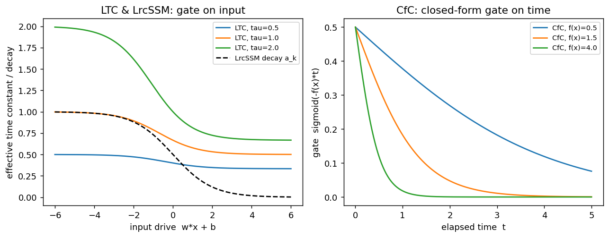

project · 2026-11-03
Exploring liquid and recurrent neural networks
Model implementations, examples and comparisons from liquid-nn-playground.
The playground brings together liquid neural network models and recurrent baselines, including LTC, CfC, NCP, Liquid-S4 and LrcSSM. It includes Python and notebook examples, datasets and benchmark configurations.
